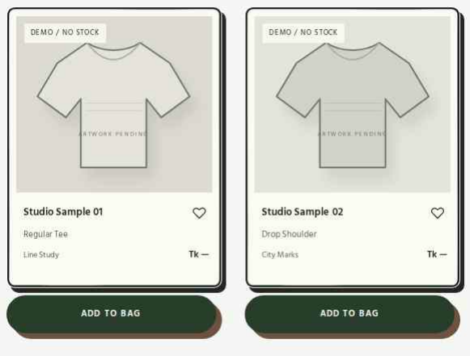
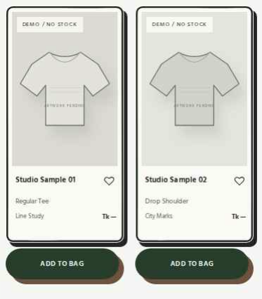

CHAPCHITRA / PRODUCT FRAME ONLY / REVIEW
Single Variable-Width Ink Outline
Actual desktop and mobile Chromium screenshots from the updated CHAPCHITRA Shop. One smoothly connected print-ink perimeter with slight 1.5–3.5px width variation, approximately 10px corners, and a solid rounded offset shadow.
Preserved: Existing card proportions, neutral image windows, garment illustrations, shopping details and favorites. The external pill ADD TO BAG is identical to the preceding approved version. Only the outer frame edge and its solid shadow have changed.
Desktop · 1440px

Mobile · 390px

These are captured browser renders, not illustrations. Click the live Shop link to inspect hover movement and shopping interactions.